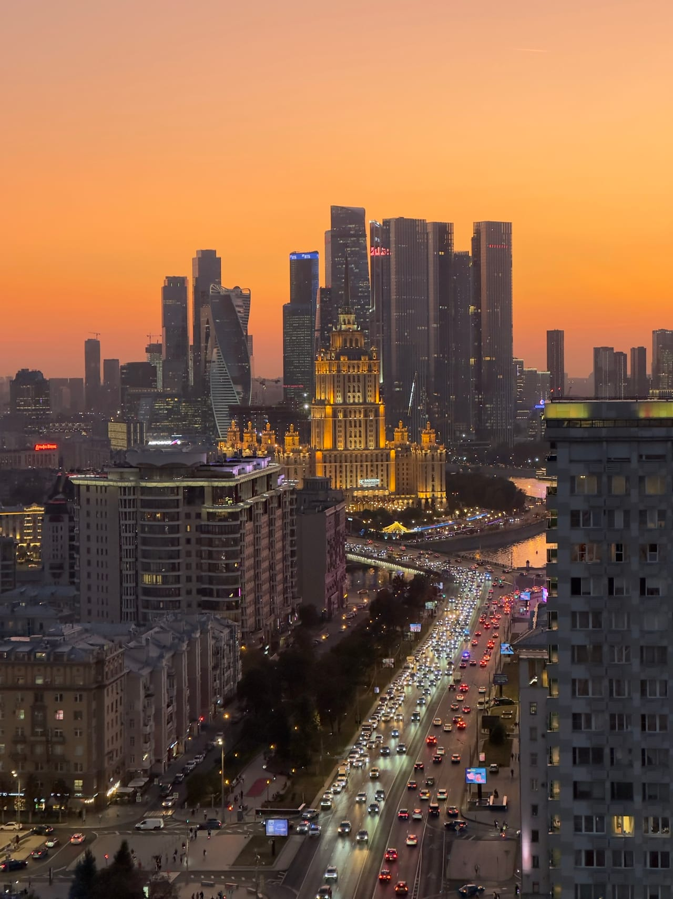

Moscow Rooftop
Экскурсии по крышам Москвы
Атмосферная прогулка над городом: виды на Москва-Сити, сталинские высотки, закатный свет и спокойный маршрут для пары, друзей или небольшой компании.
Что входит в прогулку
Экскурсия по крыше — это не сухой обзор города, а живой маршрут с настроением. Мы выбираем точку, где есть воздух, красивый ракурс и ощущение Москвы сверху.
Кому подойдет
- туристам, которые хотят увидеть Москву не только с улиц и смотровых;
- парам, которым нужен необычный вечер;
- друзьям и небольшим компаниям;
- тем, кто хочет снять атмосферные фото и видео для соцсетей.
Как проходит
После записи в Telegram-боте вы выбираете удобный вариант, получаете детали и приходите к месту встречи. Подъём на крышу проходит вместе с сопровождающим: он объясняет правила, ведёт по маршруту и задаёт спокойный темп прогулки.
FAQ
Вопросы по экскурсии
Сколько стоит экскурсия?
Ориентир — от 2000 руб. Точная стоимость зависит от формата и показывается в Telegram-боте.
Сколько длится прогулка?
Базовый формат — 1 час. При возможности можно продлить еще на час за 500 руб. за человека.
Можно прийти компанией?
Да, жесткого ограничения по количеству человек нет. Для большой компании лучше заранее уточнить детали в боте.
Готовы подняться?